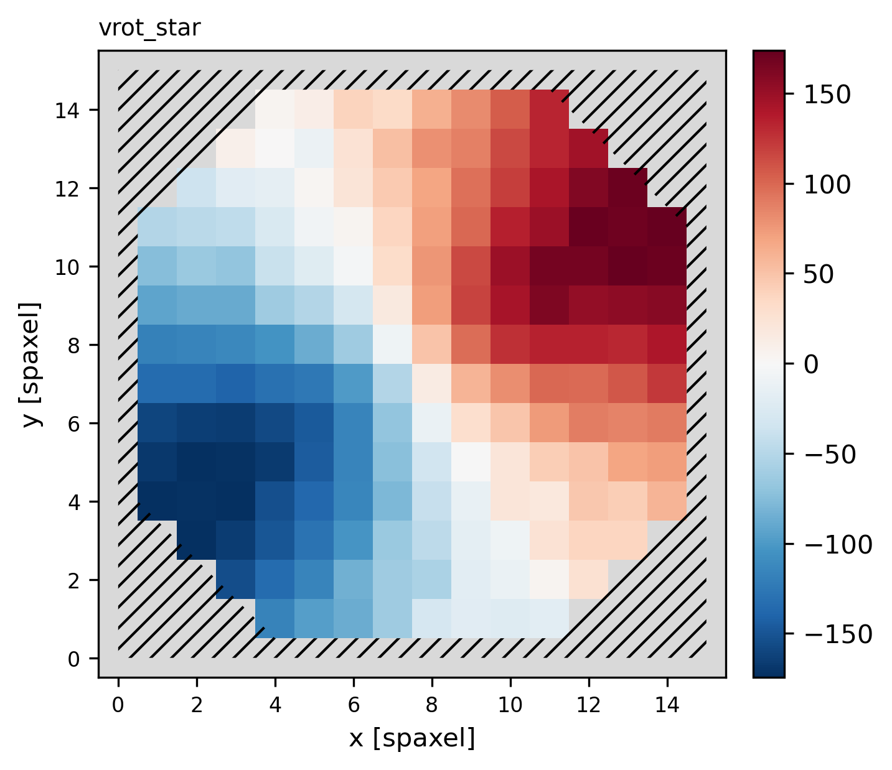

Your first fit in Python#
A spectrum, a spectrum with emission lines and a datacube, each in a few lines of Python. The code below runs as it is, on the mock data BRAIN ships a generator for, and the output shown under each block is what it printed when this page was built.
Some data#
import brainsp
folder = brainsp.mock.write_examples()
print(folder)
/home/you/.brainsp/examples
brainsp.mock.write_examples() writes five mock spectra (spectra/*.spec, each with a .truth.json holding the values it was built from), a table of per-spectrum corrections, an emission-line mask and a 16 × 16 mock datacube (Mock data). Calling it again reuses what is already there.
Fit a spectrum#
r = brainsp.fit_spectrum(f"{folder}/spectra/mock_old_population.spec",
quiet=True)
print(r)
<FitResult mock_old_population.spec: v0=149.09 km/s, sigma=198.75 km/s, AV=0.2067, chi2=0.98676>
fit_spectrum() fits the spectrum with every setting at its default (spop, BasesGM, all ages and metallicities), writes its files to brain_out and returns a FitResult. quiet=True hides the progress log. The first fit in a Python session takes a few seconds longer, while JAX compiles the fit for this problem size; later fits of the same size reuse the compiled code.
Read the numbers#
print(r.v0, r.sigma, r.av) # km/s, km/s, mag
print(r.mean_log_age_light, r.mean_metallicity_light)
print(r.av_err) # 1-sigma error of A_V
149.09 198.75 0.2067
9.991865743882286 0.02193965077
0.00420222
The mock was built with \(v_\star = 150\) km s⁻¹, \(\sigma_\star = 200\) km s⁻¹, \(A_V = 0.20\), a light-weighted mean age \(\langle\log t\rangle_L = 9.98\) and a light-weighted metallicity of 0.0221, which the fit recovers. The commonest attributes are:
Attribute |
What it is |
|---|---|
|
stellar velocity and observed dispersion, km s⁻¹ |
|
the intrinsic stellar dispersion, km s⁻¹, or None when the instrument’s or the library’s resolution is unknown |
|
\(A_V\) and the young-star extra extinction \(Y_V\), mag |
|
\(\langle\log t\rangle\) weighted by light and by mass |
|
\(\langle Z\rangle\) weighted by light and by mass |
|
\(\chi^2\) per fitted pixel and the mean absolute deviation, per cent |
|
1σ uncertainties; |
|
the population vector, one row per template |
|
the spectra, as arrays |
Reading a spectrum’s results lists every attribute.
Note
r.sigma_star is None here because the mock’s files do not state the instrumental resolution and BasesGM’s do not state the library’s. Without both, BRAIN reports only the observed dispersion r.sigma and refuses to guess an intrinsic one. Give instrumental_resolution to get it (Emission lines and resolution).
Draw it#
brainsp.plots.spectrum(r, "spectrum.png")
brainsp.plots.sfh(r, "sfh.png")

The fit of the old-population mock: the data, the model and the residuals.#

Its star formation history, as the share of light and of mass in each age.#
Fit the emission lines#
r2 = brainsp.fit_spectrum(f"{folder}/spectra/mock_star_forming_lines.spec",
nebular_mode="espop", wavelength_scale="vacuum",
quiet=True)
print(r2.lines["Halpha_6563"]) # (flux, error)
print(r2.v_gas, r2.sigma_gas) # km/s
(5.6537, 0.030439)
49.83 57.98
The gas of this mock moves at 50 km s⁻¹ with an intrinsic dispersion of 60 km s⁻¹. Any setting can be given by name, as here nebular_mode and wavelength_scale (The three fitting modes). r2.lines holds every fitted line’s flux and its 1σ error, in units of the normalised spectrum times Å (Spectrum output files).
Fit a datacube#
cube = brainsp.fit_cube(f"{folder}/cube/mock_cube.fits", redshift=0.02,
wavelength_scale="vacuum",
sn_mask=[3, 10], fit_sn_threshold=3)
print(cube.shape)
print(cube.groups["Kinematics"])
brainsp.plots.map(cube, "vrot_star", "velocity.png", cmap="RdBu_r")
(16, 16)
['Sigma_star', 'vrot_star']
fit_cube() computes the signal-to-noise masks at S/N 3 and 10, fits the spaxels above 3, writes the megacube to brain_ifu_out and returns it opened as a Megacube. cube.plane(name) returns any map as a 2-D array, NaN where no spaxel was fitted.


The stellar velocity field of the mock cube, as fitted.#
What next#
Every tutorial also comes as a short script, ready to run: brain_tutorials.zip (Tutorials).